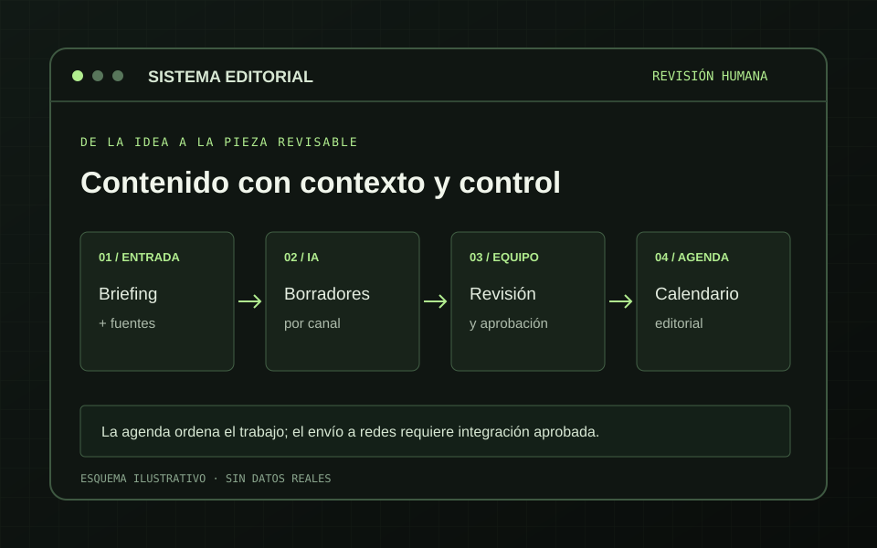

Briefing y Fuentes
El editor define audiencia, objetivo, tema y llamada a la acción. Una biblioteca de materiales aporta contexto recuperable al borrador.
Encargo · evidencia · tonoDesarrollé una plataforma editorial para que un equipo comercial B2B prepare posts, imágenes y artículos desde sus propios briefings y fuentes. La IA genera borradores; el equipo decide qué se corrige, aprueba y lleva al calendario.
El equipo necesitaba convertir temas comerciales en contenido para varios canales sin perder el contexto de sus servicios ni repetir el mismo texto en cada red. También debía saber de dónde salía cada afirmación y qué versión estaba lista para revisión.
Un calendario aislado no resolvía ese trabajo: había que reunir briefing, fuentes, redacción, imágenes y decisiones editoriales en un solo recorrido.
La plataforma organiza la generación de borradores y su adaptación por canal. Guarda las fuentes, el estado y las variantes para que una persona pueda corregir el contenido antes de planificarlo.
El editor define audiencia, objetivo, tema y llamada a la acción. Una biblioteca de materiales aporta contexto recuperable al borrador.
Encargo · evidencia · tonoLa IA prepara el post principal y adaptaciones para otros formatos. El equipo puede editar textos, elegir imágenes y revisar los controles de calidad.
Copy · imagen · revisiónLa aprobación y el calendario organizan las piezas. Los artículos pueden sincronizarse como borradores del CMS para su revisión final allí.
Estado · fecha · borrador
El proyecto reúne generación de posts y artículos, edición, variantes visuales, revisión de calidad y agenda editorial. La integración con el CMS crea borradores de blog y conserva la publicación final bajo control humano.
El equipo puede crear, editar y adaptar propuestas antes de llevarlas a un canal.
Los cambios editoriales requieren una nueva validación antes de volver a aprobar la pieza.
Los artículos revisados se preparan como borradores, con imágenes y metadatos para comprobar.
La biblioteca y las referencias acompañan al contenido para que el equipo revise afirmaciones y mantenga actualizados los materiales.
El calendario muestra las piezas preparadas y permite reservar una fecha. Las versiones y estados quedan en la plataforma.
La generación y la revisión editorial están implementadas. El calendario es una agenda interna: todavía no envía posts a redes. La conexión de publicación social sigue pendiente de permisos, integración y verificación por canal. Los borradores del CMS tampoco equivalen a artículos publicados. No se atribuyen resultados de alcance o ventas a este sistema.
Separar generación, revisión y publicación ayuda a detectar datos sin fuente, ajustar el tono y preparar una versión adecuada para cada canal.
La identidad del cliente permanece reservada. La ilustración y este relato describen el funcionamiento sin exponer su contenido editorial.
Cuéntame cómo preparáis, revisáis y planificáis hoy las piezas. Podemos definir un flujo editorial que se adapte a vuestras fuentes y canales.
Hablemos del proyecto